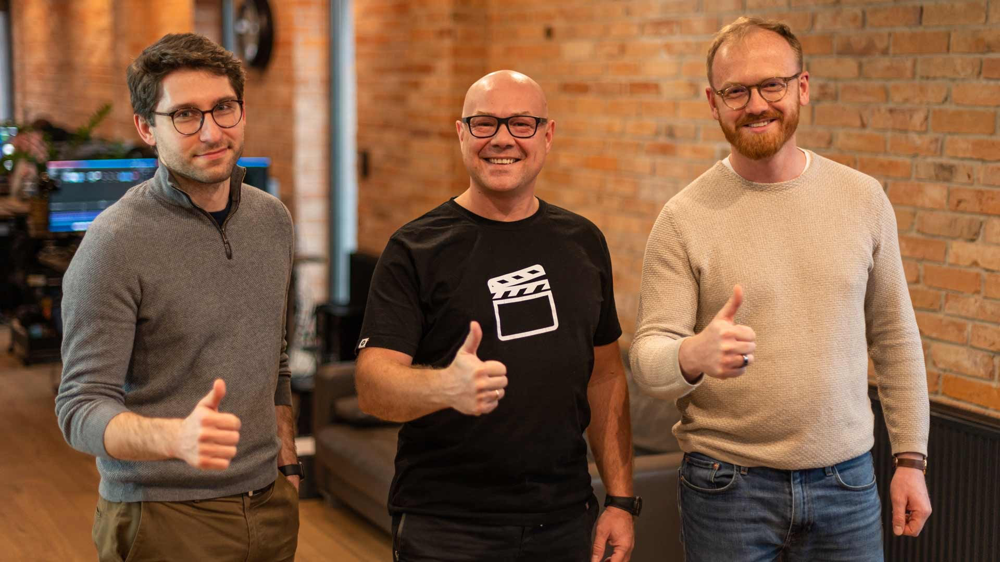
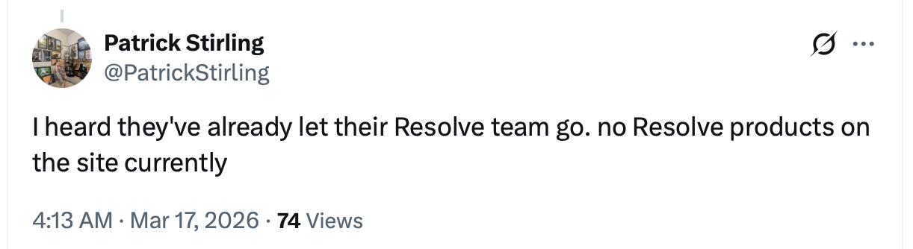

17th March 2026
MotionVFX is becoming a part of Apple. 🤯
This is something that has been rumoured/guessed for a while, but to be honest, after the Creative Studio release, I didn't think it would happen, as I would have ASSUMED if they were going to buy MotionVFX they would have done it for the Creative Studio launch.
Whilst I was pretty confident MotionVFX was looking to be sold for a LOT of money, I had my money on Adobe, Artlist, or MAYBE BorisFX - whilst it makes perfect sense for Apple to buy MotionVFX, I really didn't expect it to happen.
Apple has always been pretty careful buying out companies like this, as they don't want to appear as a monopoly, however with the current USA government, maybe that's no longer a concern.
I’ve been wrong the whole time on this topic, but my GUESS is that MAYBE at WWDC we’ll see in-app App Stores added, and Apple can populate the FCP App Store with MotionVFX stuff? I still think this is all related to FCP for iPad - they still need to release third party Motion Templates there, as currently the only way to do this is with Transfer Toolbox.
MotionVFX was originally founded by Szymon Masiak, but later sold to investors:
MotionVFX Gains Momentum with New Management and Investors
Szymon Masiak from MotionVFX is stepping down from running the company, the new management will continue to push for the best quality MotionVFX is known for.
Mid-December 2020, MotionVFX, a top vendor of FCP assets for video editors and content creators for over a decade, changed ownership. Szymon ‘Simon’ Masiak, the company’s founder and CEO, decided the time had come for him to step down from the daily operations and find a long-term partner to support the ambitious plans for MotionVFX. He chose Andrzej ‘Andrew’ Basiukiewicz and Wojciech ‘Voytec’ Korpal to come on board as the new co-CEOs. The duo brings along a group of over 20 international private and institutional investors to back the transaction and support the growth of MotionVFX. That group of investors, coming mainly from the USA, Germany, France, Poland and Spain, now holds a majority stake in the company, while Szymon remains the single largest individual investor.
Andrzej and Wojciech, who are long-time university friends, bring to the table their vast experience gathered while working for large organizations in the UK, Poland and the Middle East. They had been preparing to run the company for a long time: they spent the last six months of 2020 learning the products, understanding the market, and working closely with Szymon to ensure a smooth transition. Even though Szymon stepped down as CEO, he remains involved in crucial aspects of the company’s activity. He joined the newly formed Board, together with two experienced representatives of the investor group: Blake Winchell and George Jankovic. Blake Winchell is a California-based entrepreneur, investor and acclaimed university lecturer with over 35 years of experience in private equity and venture capital. George Jankovic is an entrepreneur and investor from the USA who built and grew several businesses, most notably the publicly listed NutriSystem Inc., which he led as President & COO and expanded over tenfold.
What does all this mean for MotionVFX? These changes mainly affect the daily operations and are aimed at general growth. Co-CEO Andrzej Basiukiewicz assures that the firm keeps its high pace and focus on the FCP market, but also has a vision of expanding their activity in many different fields. MotionVFX is building out all departments of its creative crew: software developers, motion designers and other specialists are sought. You can see the [current openings, both on-site and remote, on the company’s website. The recent developments at MotionVFX coincided with Apple’s transition to Silicon chips. “We are hard at work creating a fully native Apple Silicon experience for all of our products. Our developers have already converted over 150 products,” says co-CEO Wojciech Korpal. “We’re thrilled to take full advantage of the new hardware architecture and we have completely new exciting products planned for 2021 as well. We want to keep delivering the best possible plugins, templates and compositing elements to facilitate and enhance your work, whether you are editing your first video, working on content for social media channels, or delivering world-class projects for TV & cinema.” Lastly, we want to ensure you that the great MotionVFX creative team of Developers, Graphic Designers, Video Specialists, and the Support Crew stay onboard and unchanged.
P.S. Szymon can be found on Instagram @leica_simon

The MotionVFX website now says:
This is our biggest edit yet...
MotionVFX joins Apple!
We are extremely excited to share that MotionVFX is joining the Apple team to continue to empower creators and editors to do their best work. For over 15 years, we’ve been on a mission to create world-class, visually inspiring content and effects for video editors. From the very beginning, we’ve been all about quality, ease of use, and great design. These are also the values that we admire most in Apple’s products, and we’re thrilled to be able to embrace them together. We’d like to take this opportunity to thank all our amazing customers and supporters who have been with us through all these years. You inspired us, you challenged us, and you helped our products become what they are today. We are incredibly grateful to be part of this amazing community and excited to continue our work to serve you. This is the beginning of something truly wonderful!
MacRumours reports:
MotionVFX's 70 employees today joined Apple as part of the acquisition. The company was already a worldwide partner of Apple.
MotionVFX did not indicate whether its existing products will continue to be sold independently following the acquisition. For now, the company's plugin catalog remains available through its website and the MotionVFX marketplace.
MotionVFX has always been an incredibly loved part of the Final Cut Pro eco-system, however, recently the love has been tested, as MotionVFX pushes everyone towards subscription.
My PREDICTION is that MAYBE Apple will turn this around, and offer all their Motion Templates as single purchases in a Final Cut Pro in-app store.
It's also entirely possible that the FxPlug gurus at MotionVFX will now work alongside the ProApps team, and we might FINALLY see some big improvements to Apple Motion.
It's entirely possible they could take all their FxPlug Plugins like mFilmLook and mO2 and offer them for free in Final Cut Pro. Time will tell.
Correction (17th March 2026 1130)
It doesn't look like MotionVFX has removed the DaVinci Resolve or Adobe Premiere/After Effects for sale despite reports on Twitter. Apologies for any misreporting!
You can watch Patrick Stirling has posted on YouTube about this:
It looks like Apple has already removed all the DaVinci Resolve plugins from the website, and it sounds like the DaVinci Resolve team has already been let go:

However, it's definitely R.I.P for mCredits - they've been completely removed from the website, and remove from Apple's new Terms & Conditions. 🪦
Speaking of Terms & Conditions (you can find the old ones here)...
What stayed broadly the same:
- Digital products, generally non-refundable
- Subscriptions auto-renew
- One-user license model
- One main device plus one extra owned device
- No resale, sharing, reverse engineering
- No stock/template/competitive-product use
- Termination on breach or subscription/trial end
What changed the most:
- Privacy/GDPR and cookie disclosures were stripped out
- Account-operation detail was removed
- Trial/subscription mechanics were simplified
- Support/update discontinuation rights became more explicit
- Liability cap was added
- License wording became shorter and broader
- Backup-copy and explicit client-use language disappeared
- New harmful/unlawful/infringing-use restriction was added
The most notable items from a user-risk perspective are the new liability cap, the explicit right to discontinue products/support/updates, and the replacement of the detailed privacy notice with a brief reference to an Apple privacy URL.
In other MotionVFX news, mTracker 3D v2.1.6 is out now with an updated tracking engine! I wonder if it's using Apple's code?
Certainly interesting times ahead!